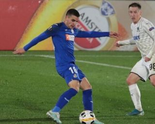

Ezzcoins › Player pages › Mauro Arambarri
80
CM

Arambarri
PAC68
SHO79
PAS76
DRI78
DEF80
PHY81
Photo (cropped): Soccer.ru · CC BY-SA 3.0 · Wikimedia Commons
Photo source
https://commons.wikimedia.org/wiki/File:Mauro_Arambarri.jpg
Licence: https://creativecommons.org/licenses/by-sa/3.0
Mauro Arambarri
80 CM · River Plate · LPF ·  Uruguay
Uruguay
No console price yet. Add this player to your watchlist on Ezzcoins: the most-watched players get a price every hour.
82Meta rating · CDM +2 vs overall · CM 80
PAC68
SHO79
PAS76
DRI78
DEF80
PHY81
- Position
- CM (also CDM)
- Club
- River Plate
- League
- LPF
- Nation
- Uruguay
- Skill moves
- 3★
- Weak foot
- 3★
- Preferred foot
- Right
Meta rating: Ezzcoins' own estimate of how well this card plays in game, worked out from its stats for each position it can play, its skill moves, weak foot and PlayStyle+. An average card scores about its overall rating; higher means it plays above its rating.
Watch on Ezzcoins